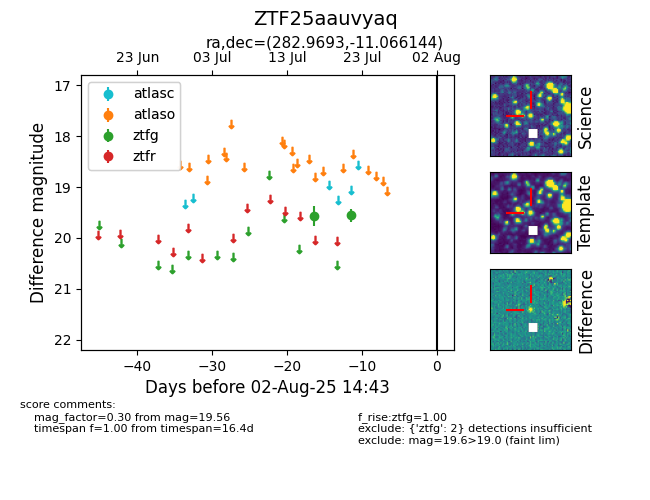

Target ZTF25aauvyaq at 2025-08-06 17:45, see:
FINK: fink-portal.org/ZTF25aauvyaq
Lasair: lasair-ztf.lsst.ac.uk/objects/ZTF25aauvyaq
ALeRCE: alerce.online/object/ZTF25aauvyaq
alt names
ZTF25aauvyaq (ztf,fink)
coordinates:
equatorial (ra, dec) = (282.9693,-11.06614)
galactic (l, b) = (23.1064,-5.11741)
photometry
last ztfg=19.56
2 ztfg detections
